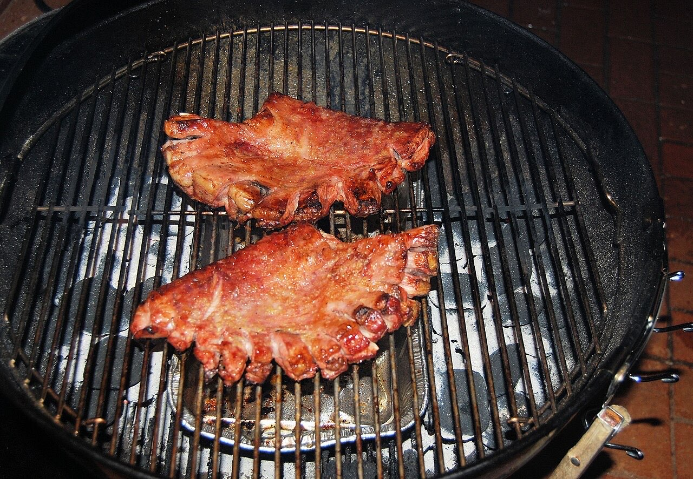
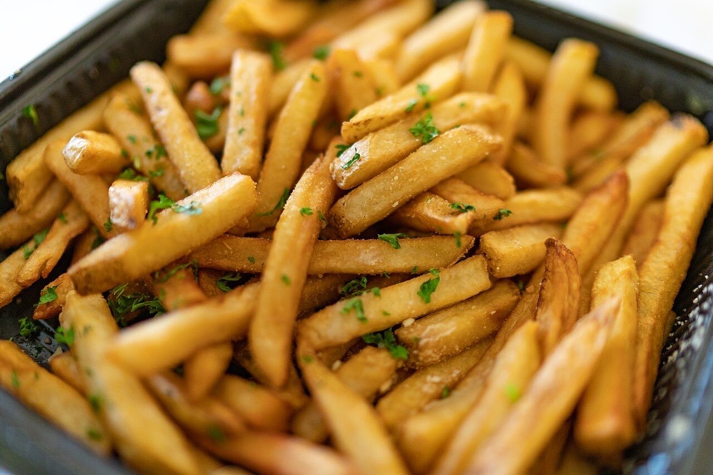
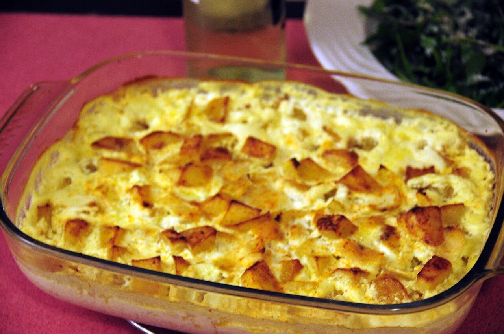

Cozinha tradicional portuguesa · Guimarães
Churrasqueira e sabores de São Miguel
Cozinha na brasa, à portuguesa.
Para almoçar sem pressa.
Por QR code, sem esperar pela equipa.
O Sabores Restaurante fica na Rua de São Miguel, em Guimarães, com churrasqueira e cozinha tradicional portuguesa. Venha almoçar à portuguesa, com a família.



Fotografias ilustrativas — no site final usamos as vossas.
Novo · Pedidos por QR code
Menos espera nas horas de ponta, menos enganos nos pedidos e a equipa livre para servir.
Pedido de reserva
Escolha o dia e a hora — o pedido chega por WhatsApp e confirmamos logo.
↑ Assim chegaria a mensagem ao vosso WhatsApp. (Nesta demonstração nada é enviado.)
Onde estamos
Proposta para Sabores Restaurante (churrasqueira)
Esta página foi feita de propósito para Sabores Restaurante (churrasqueira) por João Machado, programador web aqui de Guimarães. Inclui:
Eu trato do alojamento e da manutenção. Sem compromisso.